2029, A Future Record
About, Catalogue, Dpub, Uriah Gray
2029, A Future Record
Paranoid-fantasies, Erik Davis
Well, I think the most important thing to talk about now is surveillance. The sense that your environment, or that something -- that you don't know -- in your environment is watching you, is very, very old. It's been part of the technological world for 150 years. You can look back at the late 19th century and find people who were spinning paranoid fantasies about people manipulating their minds through radio waves. Those kinds of marginal ideas have always been kind of hovering around technology.
In the '90s we had The X-Files and that kind of stuff, but I think that now there's a more immediate and realistic sense of how much the spread of these kinds of invisible technologies of surveillance and control change the way we feel on a very basic moment-to-moment level. As we move through our day, as we say things, as we do things, we find ourselves suddenly self-censoring in ways that we hadn't before.
Notes
2029, Ghost in the Shell. Primarily set in the mid-twenty-first century in the fictional Japanese city of Niihama. In this post-cyberpunk iteration of a possible future, computer technology has advanced to the point that many members of the public possess cyberbrains, technology that allows them to interface their biological brain with various networks.
Text, Q&A: Erik Davis / Cyber-visionary comments on the nature of technology in the world today.
Read more
Catalogue of visibility
All
Nature
Machine
Art
Illusion
Feature

70
Facial recognition system

27
Closed-circuit television (CCTV)
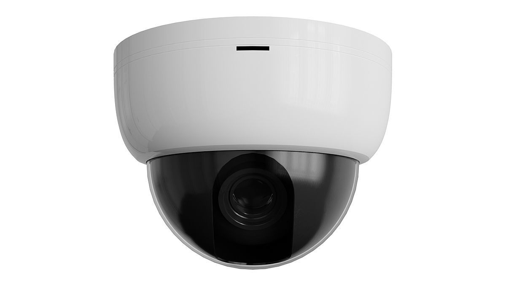
27
Closed-circuit television (CCTV)

89 – 49
Edward Alexander Wadsworth
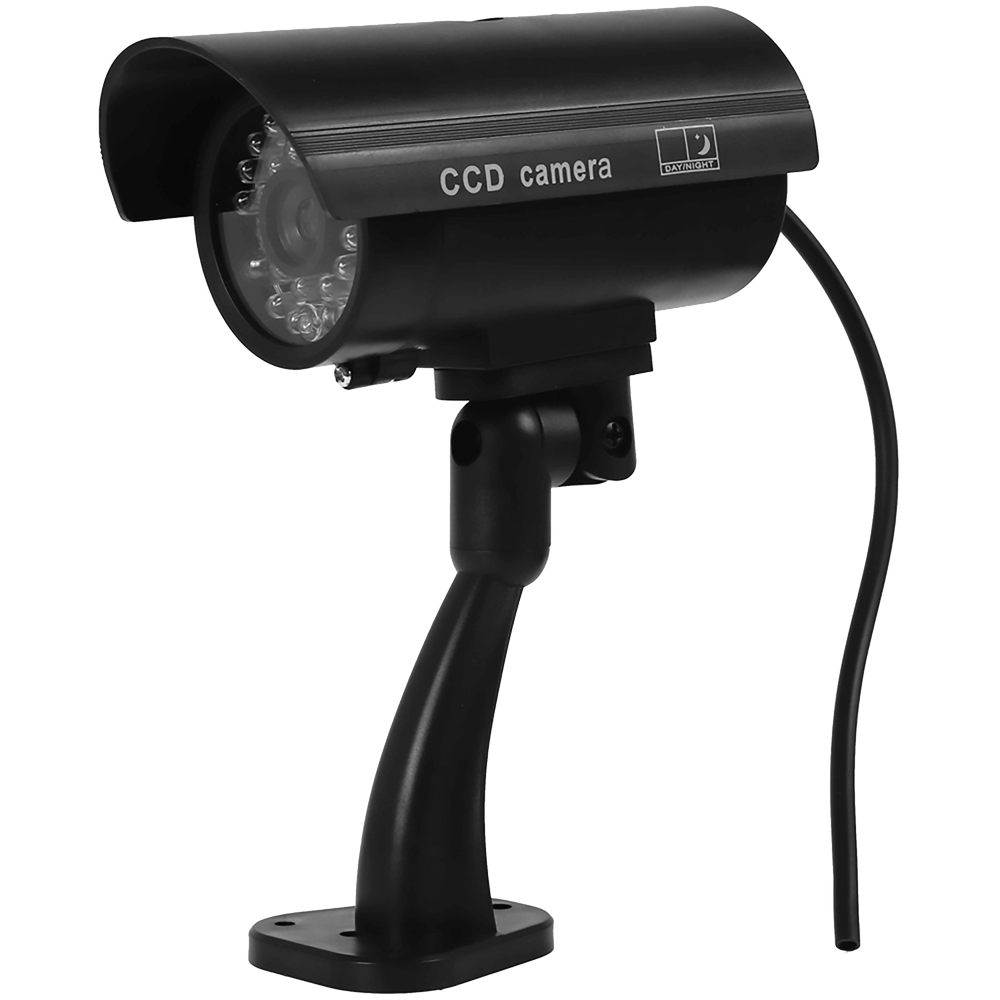
27
Closed-circuit television (CCTV)
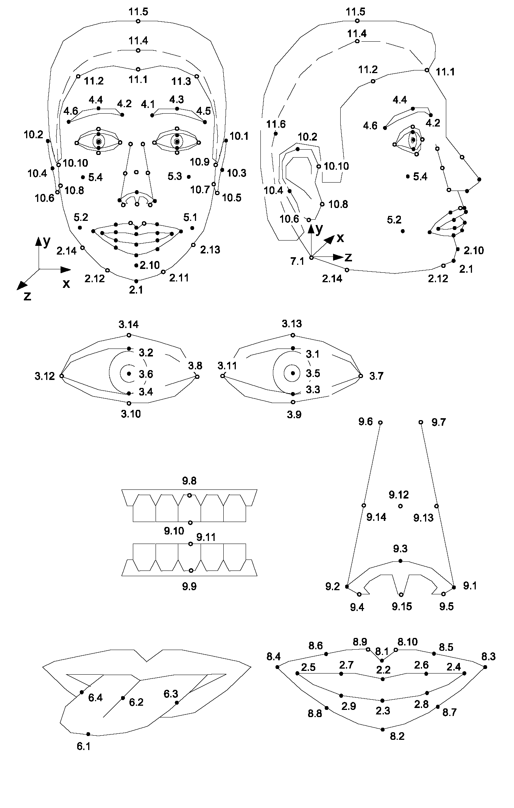
43
Ehrenstein illusion (square)
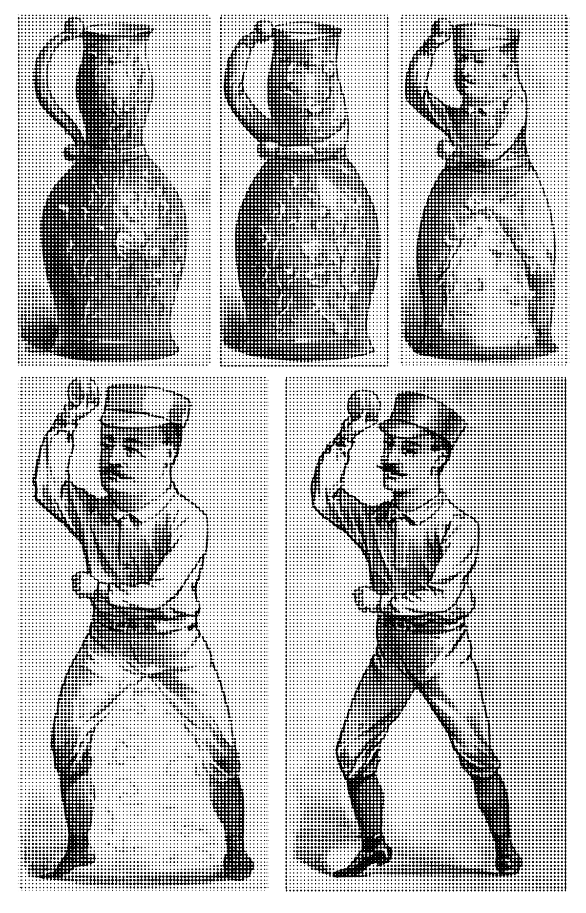
89
Evolution of a Pitcher (1889). Library of Congress.

76
Kanizsa triangle (A lightness induced illusory triangle)

55
Printable Camo Stencil
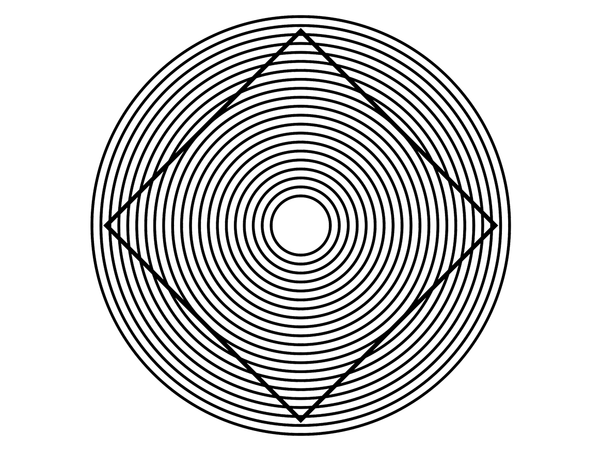
43
Ehrenstein illusion (circle)
43
Ehrenstein illusion (square)
43
Ehrenstein illusion (sun)
87
Stealth Bomber (Northrop Grumman B-2 Spirit)
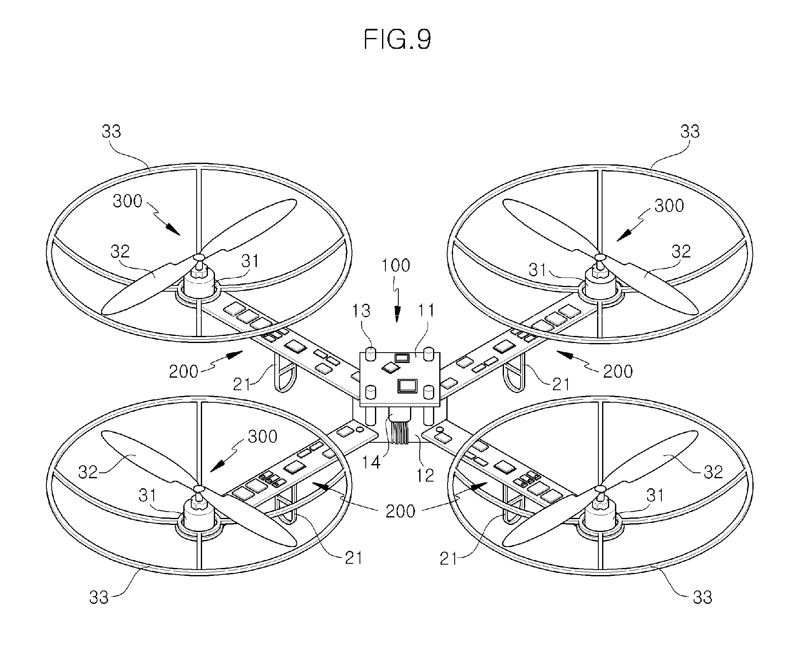
86
Stealth Bomber (Northrop Grumman B-2 Spirit)
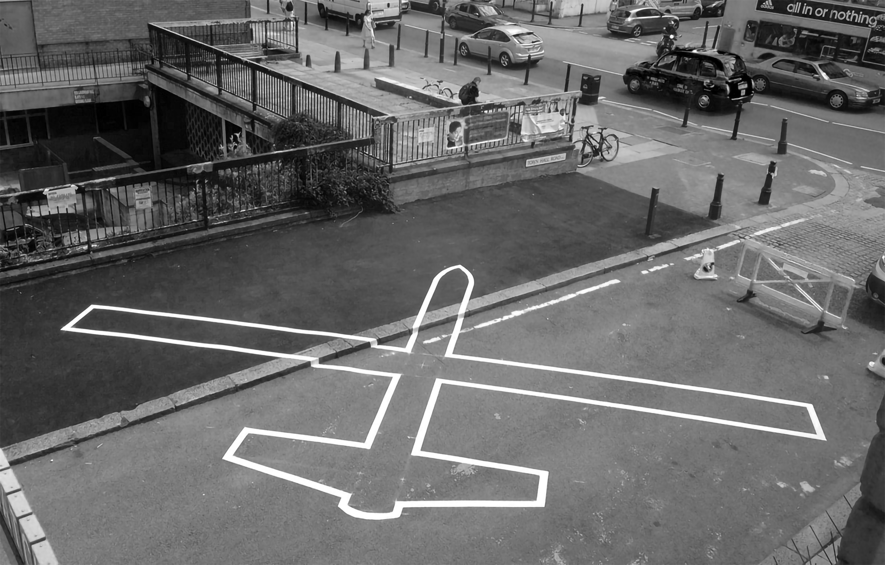
86
Stealth Bomber (Northrop Grumman B-2 Spirit)
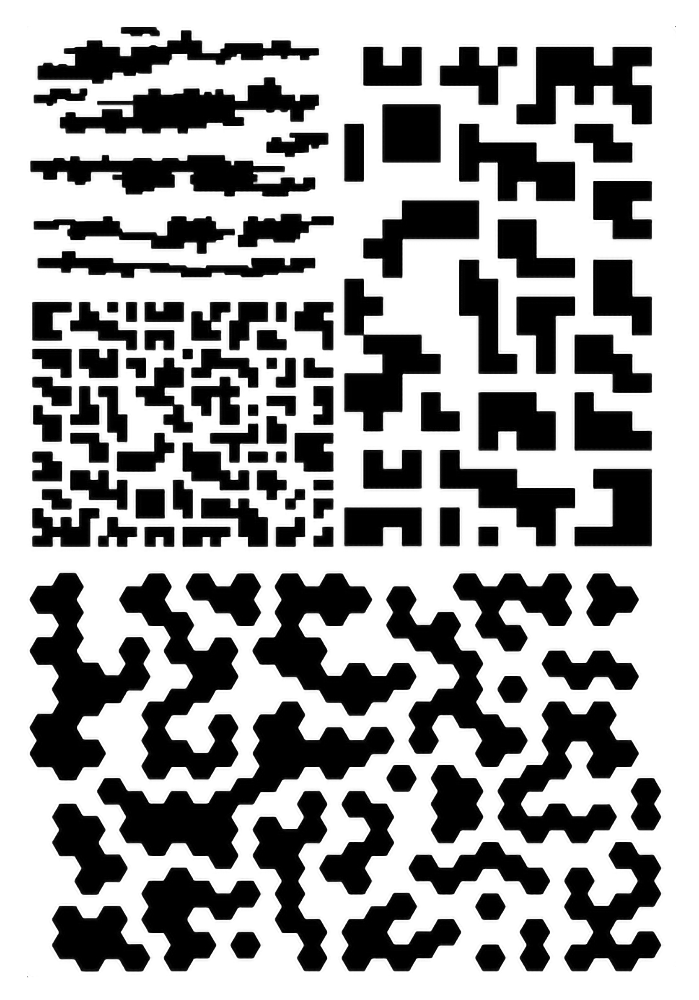
55
Printable Camo Stencil
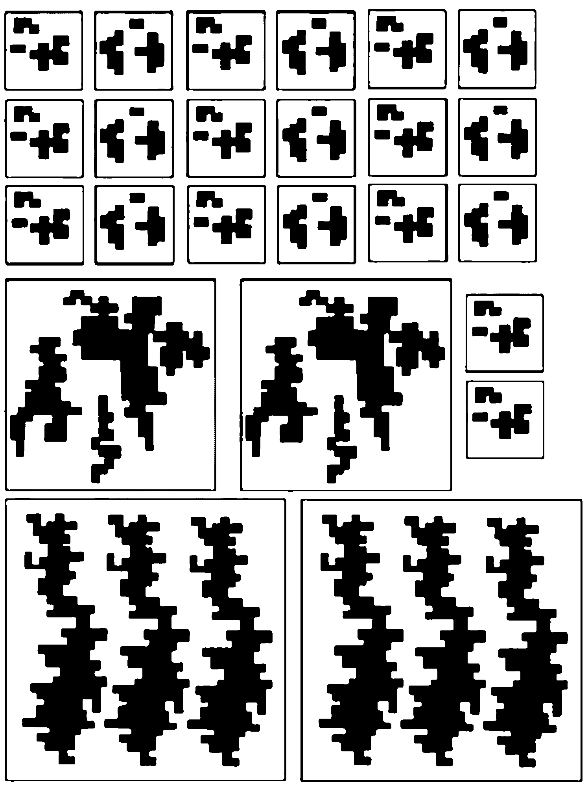
55
Printable Camo Stencil
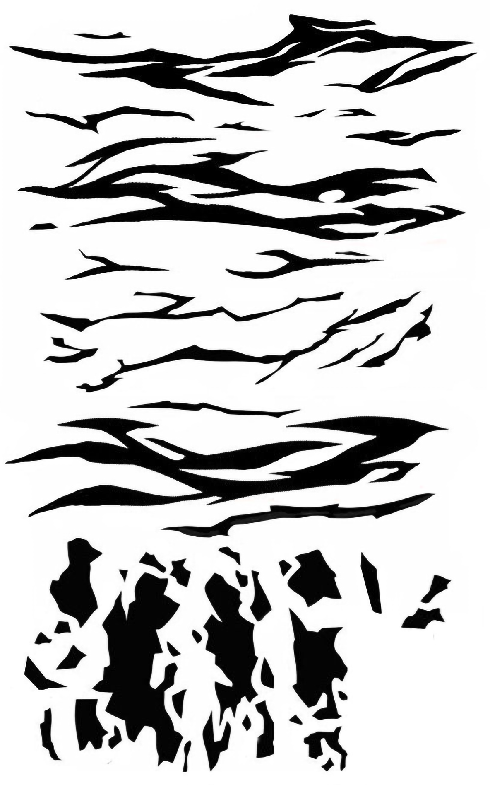
55
Printable Camo Stencil
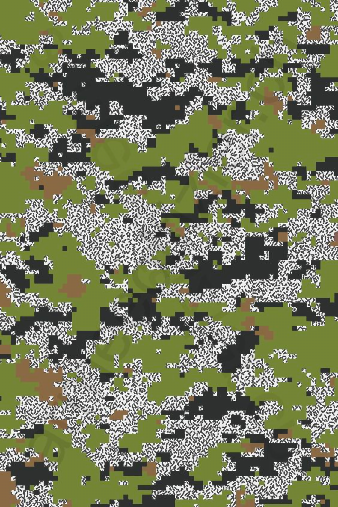
55
Printable Camo Stencil
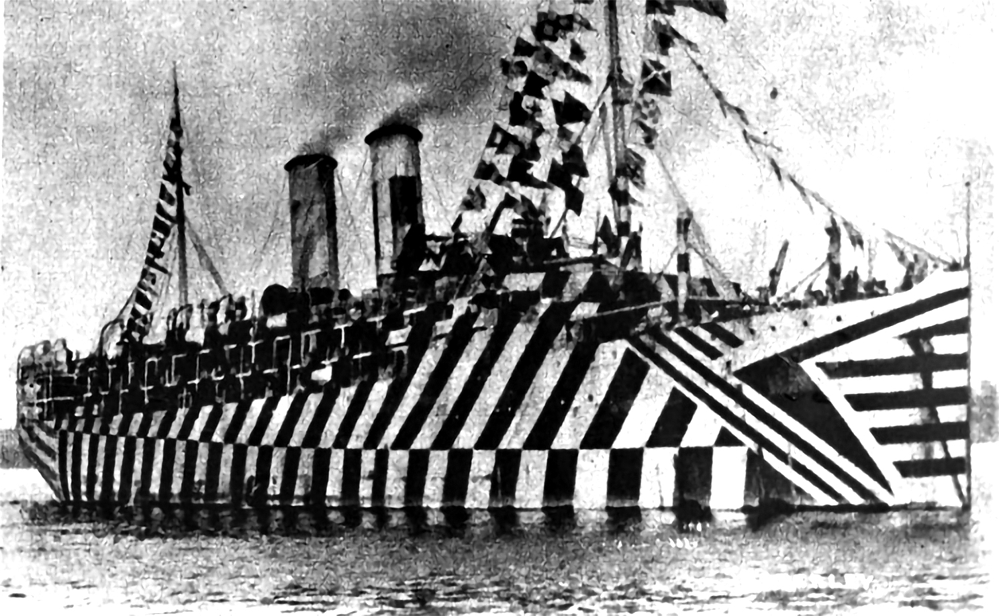
55
Printable Camo Stencil
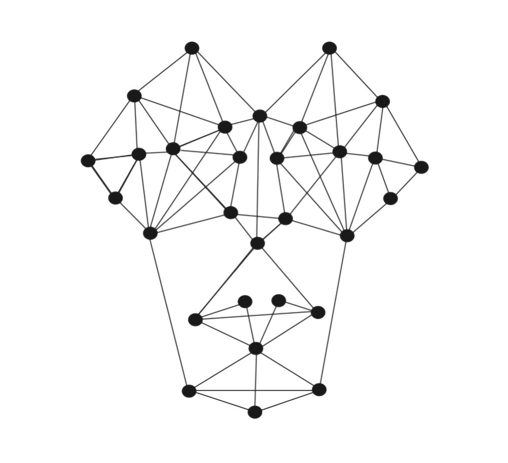
43
Ehrenstein illusion (square)
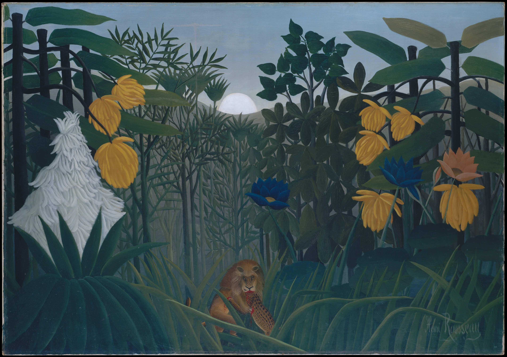
19
Stepping stones